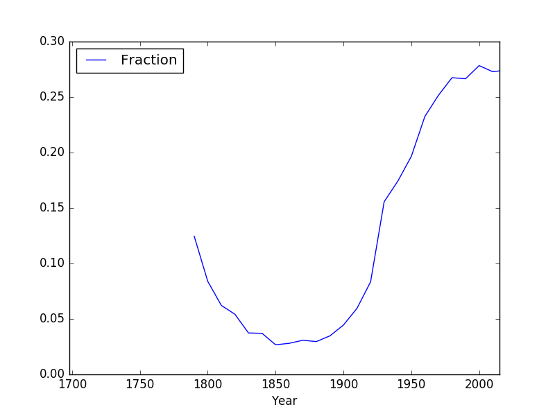

Submit the following programs via Gradescope:
- Due Date: February 14 Think CS: Chapters 1 & 2; Lab1
Write a program that prints "Hello, World!" to the screen.
Hint: See Lab 1.
- Due Date: February 15 Think CS: Chapter 4; Lab 1
Write a program that draws an octagon. Use the sample turtle programs from class to get started.

Note: Whenever submitting a turtle program, choose a name for your file that is not turtle.py. When executing the "import turtle" statement, the computer first looks in the folder where the file is saved for the turtle module and then in the libraries (and other places on the path). So, it thinks the module is itself, causing all kinds of errors. To avoid this, name your program something like "myTurtle.py" or "program2.py".Hint: See Lab 1.
- Due Date: February 16 Think CS: Chapter 4; Lab 1
Write a program that implements the pseudocode ("informal high-level description of the operating principle of a computer program or other algorithm") below:
Repeat 36 times: Walk forward 100 steps Turn left 145 degrees Walk forward 10 steps Turn right 90 degrees Walk forward 10 steps Turn left 135 degrees Walk forward 100 steps
- Due Date: February 20 Think CS: Chapter 2
Write a program that will print "I love Python!" 25 times.
The output of your program should be:
I love Python! I love Python! I love Python! I love Python! I love Python! I love Python! I love Python! I love Python! I love Python! I love Python! I love Python! I love Python! I love Python! I love Python! I love Python! I love Python! I love Python! I love Python! I love Python! I love Python! I love Python! I love Python! I love Python! I love Python! I love Python!
- Due Date: February 21 Think CS: Chapter 4
Write a program that uses the turtle package to draw a 5-pointed star.
Your output should look like this:

Hint: For the 5-pointed star, the turtle turns 2 complete revolutions (720 degrees). How much does the turtle need to turn at each point?
- Due Date: February 22 Think CS: Chapter 2
&
Section 4.4
Write a program that prints out the numbers from 0 to 14.
The output of your program should be:
0 1 2 3 4 5 6 7 8 9 10 11 12 13 14
Hint: Use a loop and print out the index or loop variable.
- Due Date: February 27 Think CS: Chapters 2 & Chapter 9
Using the string commands introduced in Lab 2, write a Python program that prompts the user for a message, and then prints the message, the message in upper case letters, and the message in lower case letters.
A sample run of your program should look like:
Enter a message: Mihi cura futuri Mihi cura futuri MIHI CURA FUTURI mihi cura futuri
Another run:
Enter a message: I love Python! I love Python! I LOVE PYTHON! i love python!
Hint: Your program should be able to take any phrase the user enters and prints it, it in upper case letters, and it in lower case letters. To do that, you need to store the phrase in a variable and print variations of the stored variable.
- Due Date: February 28 Think CS: Chapters 2 & Chapter 9
Write a program that prompts the user to enter a phrase and then prints out the ASCII code of each character in the phrase.
A sample run of your program should look like:
Enter a phrase: I love Python! In ASCII: 73 32 108 111 118 101 32 80 121 116 104 111 110 33
And another sample run:
Enter a phrase: ABC In ASCII: 65 66 67
Hint: If c is a character, ord(c) returns its ASCII code. For example, if c is 'I', then ord(c) returns 73. See Lab 2.
- Due Date: February 29 Think CS: Chapters 2 & Chapter 9

(The cipher disk above shifts 'A' to 'N', 'B' to 'O', ... 'Z' to 'M', or a shift of 13. From secretcodebreaker.com.)Write a program that prompts the user to enter a word and then prints out the word with each letter shifted right by 13. That is, 'a' becomes 'n', 'b' becomes 'o', ... 'y' becomes 'l', and 'z' becomes 'm'.
Assume that all inputted words are in lower case letters: 'a',...,'z'.
A sample run of your program should look like:
Enter a word: zebra Your word in code is: mroen
Hint: See Caesar Cipher example
- Due Date: March 1 Think CS: Chapters 2 & 4
Write a program that implements the pseudocode below:
For i = 5, 10, 15, 20, 25, ... ,300: Walk forward i steps Turn left 91 degreesYour output should look similar to:

Hint: See examples of range(start,stop,step) in Lecture 2 notes.
- Due Date: March 4 Think CS: Chapters 2 & 4
Modify the program from Lab 3 to show the shades of blue.
Your output should look similar to:

- Due Date: March 5 Think CS: Chapters 2 & 4
Write a program that asks the user for the hexcode of a color and then displays a turtle that color.
A sample run of your program should look like:
Enter a hex string: #A922A9
and the output should look similar to:

Hint: See Section 4.3 for setting the background color and Lab 3 for colors.
- Due Date: March 6 Think CS: Chapters 2 & 4
Draw a cornflower blue pentagon using the turtle module. You can specify the color by name ("cornflowerblue"), by hex string ("#6495ED"), or by RGB values (100, 149, 237). The turtle should be turtle shaped. Your turtle should move forward 100 units, turn left the correct amount of degrees, and then stamp.
A sample run of your program will look like:
Hint: See Lab 3.
- Due Date: March 7 Think CS: Chapter 2 & Section 8.2
Write a program that asks the user for a message, then prints out that message in reverse. The reversed output message should be printed with two copies of each character per line.
A sample run of your program should look like:
Enter a message: I love Python! ! ! n n o o h h t t y y P P e e v v o o l l I I
Hint: See Lab 2 or Lecture 2 notes.
- Due Date: March 8 Think CS: Chapter 4
Write a program that asks the user for 5 whole (integer) numbers. For each number, turn the turtle left the degrees entered and then the turtle should move forward 100.
A sample run of your program should look like:
Enter a number: 270 Enter a number: 100 Enter a number: 190 Enter a number: 200 Enter a number: 80
and the output should look similar to:

- Due Date: March 11 Think CS: Chapter 2 & Section 8.2
Implement the following piece of pseudocode as a complete program:1. Prompt the user to enter a string and call it s. 2. Let ls be the length of s. 3. For i in 0, 1, ..., ls-1: 4. Print s[:i] 5. For i in 0, 1, ..., ls-1: 6. Print s[i:] 5. Print a closing statementA sample run of your program should look like:
Enter string: a man a plan a canal panama a a a m a ma a man a man a man a a man a a man a p a man a pl a man a pla a man a plan a man a plan a man a plan a a man a plan a a man a plan a c a man a plan a ca a man a plan a can a man a plan a cana a man a plan a canal a man a plan a canal a man a plan a canal p a man a plan a canal pa a man a plan a canal pan a man a plan a canal pana a man a plan a canal panam a man a plan a canal panama man a plan a canal panama man a plan a canal panama an a plan a canal panama n a plan a canal panama a plan a canal panama a plan a canal panama plan a canal panama plan a canal panama lan a canal panama an a canal panama n a canal panama a canal panama a canal panama canal panama canal panama anal panama nal panama al panama l panama panama panama anama nama ama ma a Thank you for using my program!
- Due Date: March 12 Think CS: Chapter 2 & Section 8.2
Create a program that creates a image of purple and yellow stripes. Your program should ask the user for the size of your image, the name of the output file, and create a .png file of stripes. For example, if the user enters 50, your program should create a 50x50 image, alternating between purple and yellow stripes.
Your output should look similar to this:
Enter the size: 50 Enter output file: stripes50.png
Important!! Before submitting your program for grading, remove commands that show the image; any plt.show() and plt.imshow() commands will give an error! The program is graded on a server on the cloud and does not have a graphics window. Instead, the files your program produces are compared pixel-by-pixel to the answer to check for correctness.
Hint: See notes from Lecture 4.
- Due Date: March 13 Think CS: Section 2.7
Write a program that implements the pseudocode below:
1. Ask the user for the number of hours until the weekend. 2. Print out the days until the weekend (days = hours // 24) 3. Print out the leftover hours (leftover = hours % 24)
A sample run of your program should look like:
Enter number of hours: 27 Days: 1 Hours: 3
and another sample run:
Enter number of hours: 52 Days: 2 Hours: 4
Hint: See Section 2.7.
- Due Date: March 14 Think CS: Chapter 2
Write a program that converts kilometers to miles. Your program should prompt the user for the number of kilometers and then print out the number of miles.
A useful formula: miles = 0.621371* kilometers.
Hint: See Lab 4.
- Due Date: March 15 Think CS: Chapter 7 &
Section 8.11
Following Lab 5, write a program that asks the user for the name of a png file and print the number of pixels that are nearly white (the fraction of red, the fraction of green, and the fraction of blue are all above 0.75).
For example, if your file was of the snow pack in the Sierra Nevada mountains in California in September 2014:

then a sample run would be:
Enter file name: caDrought2014.png Snow count is 38010
Note: for this program, you only need to compute the snow count. Showing the image will confuse the grading script, since it's only expecting the snow count.
- Due Date: March 18 Burch's Logic & Circuits
Write a logical epxression that is equivalent to the circuit that computes the majority of 3 inputs, called in1, in2, in3:
- If two or more of the inputs are True, then your expression should evaluate to True.
- Otherwise (two or more of the inputs are False), then your expression should evaluate to False.

Save your expression to a text file. See Lab 5 for the format for submitting logical expressions to Gradescope.
- Due Date: March 19 Burch's Logic & Circuits
Build a circuit that has the same behavior as a nand gate (i.e. for the same inputs, gives identical output) using only and, or, and not gates.
Save your expression to a text file. See Lab 5 for the format for submitting logical expressions to Gradescope.
- Due Date: March 20 Think CS:
Section 10.25
Write a program that asks the user for a list of nouns (separated by spaces) and approximates the fraction that are plural by counting the fraction that end in "s". Your program should output the total number of words and the fraction that end in "s". Assume that words are separated by spaces (and ignore the possibility of tabs and punctuation between words.)
A sample run of the program:
Enter nouns: apple bananas cantalopes durian Number of words: 4 Fraction of your list that is plural is 0.5
And another sample run of the program:
Enter nouns: hats gloves coats glasses scarves Number of words: 5 Fraction of your list that is plural is 1.0
Hint: Break this problem into pieces:
- First, count the number of words in the string the user entered (hint: count the number of spaces). Print out the number of words. Make sure this works before going onto the next part.
- Next, ignoring the last word (which is a special case and can be dealt with separately), count the number of words ending in 's' (hint: count the number of "s "). Test that this part works before going on to the next step.
- Last, check the last word to see if it ends in "s"-- since it's the last word, the "s" will always occur at the same index in the string.
- Due Date: March 21 Think CS: Chapter 4 & Section 7.4
The program turtleString.py takes a string as input and uses that string to control what the turtle draws on the screen (inspired by code.org's graph paper programming). Currently, the program processes the following commands:
- 'F': moves the turtle forward 50 steps
- 'L': turns the turtle 90 degrees to the left
- 'R': turns the turtle 90 degrees to the right
- '^': lifts the pen
- 'v': lowers the pen
Modify this program to allow the user also to specify with the following symbols:
- 'B': moves the turtle backwards 50 steps
- 'S': makes the turtle stamp
- 'l': turns the turle 45 degrees to the left
- 'r': turns the turtle 45 degrees to the right
- 'p': change the pen color to purple
Hint: See Lecture 4 notes.
- Due Date: March 22 Burch's Logic & Circuits
Build a circuit that has the same behavior as a nor gate (i.e. for the same inputs, gives identical output) using only and, or, and not gates.

Save your expression to a text file. See Lab 5 for the format for submitting logical expressions to Gradescope.
- Due Date: March 25 10-mins to Pandas, DataCamp Pandas
Modify the program from Lab 6 that displays the NYC historical population data. Your program should ask the user for the borough, an name for the output file, and then display the fraction of the population that has lived in that borough, over time.
A sample run of the program:
Enter borough name: Queens Enter output file name: qFraction.png
The file qFraction.png:

Important!! Before submitting your program for grading, remove commands that show the image; any plt.show() and plt.imshow() commands will give an error! The program is graded on a server on the cloud and does not have a graphics window.
- Due Date: March 26 10-mins to Pandas, DataCamp Pandas
Write a program that computes the average and maximum population over time for a borough (entered by the user). Your program should assume that the NYC historical population data file, nycHistPop.csv is in the same directory.
A sample run of your program:
Enter borough: Staten Island Average population: 139814.23076923078 Maximum population: 474558
and another run:
Enter borough: Brooklyn Average population: 1252437.5384615385 Maximum population: 2738175
Hint: See Lab 6
If you are getting errors, check the following:- Use skiprows=5 when reading in the data
- Print out the labels when printing the average and maximum values (follow the sample output exactly)
Example: print("Average population:", average)
- Due Date: March 27
Ubuntu Terminal Reference Sheet
Write an Unix shell script that prints Hello, World to the screen.
Submit a single text file containing your shell commands. See Lab 6 for details.
- Due Date: March 28
GitHub Guide
In Lab 6, you created a GitHub account. Submit a text file with the name of your account. The grading script is expecting a file with the format:
#Name: Your name #Date: October 2023 #Account name for my GitHub account AccountNameGoesHere
Note: it takes a few minutes for a newly created GitHub account to be visible. If you submit to Gradescope and get a message that the account doesn't exist, wait a few minutes and try again.
- Due Date: March 29 10-mins to Pandas, DataCamp Pandas
Modify the program from Lab 7 that displays shelter population over time to:
- ask the user to specify the input file,
- ask the user to specify the output file,
- make a plot of the fraction of the total population that are children over time from the data in input file, and
- store the plot in the output file the user specified.
A sample run of the program:
Enter name of input file: DHS_Daily_Report.csv Enter name of output file: dhsPlot.png
which produces an output:
Note: The grading script is expecting that the label (i.e. name of your new column) is "Fraction Children".
Important!! Before submitting your program for grading, remove commands that show the image; any plt.show() and plt.imshow() commands will give an error! The program is graded on a server on the cloud and does not have a graphics window.